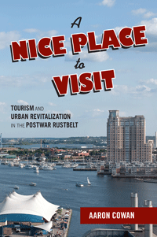

<body bgcolor="#FFFFFF" text="#000000" link="#0000FF" vlink="#CC0000" alink="#CC0000"><center><hr width="350" size="1" align="center" noshade><p>
<i>An engaging, first-of-its-kind historical analysis of four Rustbelt cities’ efforts to remake themselves into tourist locales in the postindustrial era</i>
<br><hr width="350" size="1" align="center" noshade><p><a href="https://cdcshoppingcart.uchicago.edu/Cart/ChicagoBook.aspx?ISBN=&&PRESS=temple" target="_top">Buy this book!</a> | <a href="https://cdcshoppingcart.uchicago.edu/Cart/Cart.aspx?PRESS=temple" target="_top">View Cart</a> | <a href="https://cdcshoppingcart.uchicago.edu/Cart/Cart.aspx?PRESS=temple" target="_top">Check Out</a></p><p></p></center><!--none//--><h1>A Nice Place to Visit</h1>
<H2>Tourism and Urban Revitalization in the Postwar Rustbelt
</H2>
<h3>Aaron Cowan</h3>
paper: $29.95, May 16<BR>EAN:&nbsp;978-1-4399-1346-8<BR><font color=#990033>Not Yet Published Preorder</FONT><font size=-7><br>&nbsp;</font></p><p class="info">cloth: $84.50, <BR>EAN:&nbsp;978-1-4399-1345-1<BR><font color=#990033>Not Yet Published Preorder</FONT><font size=-7><br>&nbsp;</font></p><p class="info">e-book: $29.95, <BR>EAN:&nbsp;978-1-4399-1347-5<BR><font color=#990033>Not Yet Published Preorder</FONT><font size=-7><br>&nbsp;</font></p></p></td></tr></table>
<BR> <p class="info">236 pp<BR> 6 x 9<BR> 10&nbsp;figures 10&nbsp;color&nbsp;illustrations<BR></P> <p class="info"><font size=-7>&nbsp;</font></p><p class="info">
</P><BLOCKQUOTE></BLOCKQUOTE>
<p>
How did tourism gain a central role in the postwar American Rustbelt city? And how did tourism development reshape the meaning and function of these cities? These are the questions at the heart of Aaron Cowan’s groundbreaking book, <i>A Nice Place to Visit. <br>
<p></i>Cowan provides an insightful, comparative look at the historical development of Cincinnati, St. Louis, Pittsburgh, and Baltimore in the post–World War II period to show how urban tourism provided a potential solution to the economic woes of deindustrialization. <i>A Nice Place to Visit</i> chronicles the visions of urban leaders who planned hotels, convention centers, stadiums, and festival marketplaces to remake these cities as tourist destinations. Cowan also addresses the ever-present tensions between tourist development and the needs and demands of residents in urban communities.<br>
<p><i>A Nice Place to Visit </i>charts how these Rustbelt cities adapted to urban decline and struggled to meet the challenge of becoming an appealing place to visit, as well as good and just communities in which to live.
<br>
<P CLASS="top"><A HREF="#top">BACK TO TOP</A></P>&nbsp;
<BR>&nbsp;
&nbsp;<P>
</P><BR>&nbsp;
<H2>About the Author(s)</H2><p>
<b>Aaron Cowan</b> is Associate Professor of History at Slippery Rock University and co-director of Slippery Rock University’s Stone House Center for Public Humanities.
<br>
<P CLASS="top"><A HREF="#top">BACK TO TOP</A></P>
<p><h2>Subject Categories</h2><A HREF="/tempress/urban.html" TARGET="_top">Urban Studies</a><BR><A HREF="/tempress/history.html" TARGET="_top">History</a><BR><A HREF="/tempress/political.html" TARGET="_top">Political Science and Public Policy</a>
</p>
<P><I><a href="http://www.temple.edu/tempress/urban_life.html" onMouseOver="window.status='Click for other books in this series!'; return true;" onMouseOut="window.status="; return true;" target="_top”><p>
Urban Life, Landscape, and Policy
<br>
</p><p>
<i>Urban Life, Landscape, and Policy Series</i>, edited by Zane L. Miller, David Stradling, and Larry Bennett, features books that examine past and contemporary cities, focusing on cultural and social issues. The editors seek proposals that analyze processes of urban change relevant to the future of cities and their metropolitan regions, and that examine urban and regional planning, environmental issues, and urban policy studies, thus contributing to ongoing debates.
<br />
<br></p>
<p align="center"><a href="https://cdcshoppingcart.uchicago.edu/Cart/ChicagoBook.aspx?ISBN=&&PRESS=temple" target="_top">Buy this book!</a> | <a href="https://cdcshoppingcart.uchicago.edu/Cart/Cart.aspx?PRESS=temple" target="_top">View Cart</a> | <a href="https://cdcshoppingcart.uchicago.edu/Cart/Cart.aspx?PRESS=temple" target="_top">Check Out</a></p><p><font face="Arial" size="1"><a href="copyright.html" onMouseOver="window.status='Web Copyright Policy';return true;" onMouseOut="window.status=''" title="Web Copyright Policy">&copy;</a> <a href="http://www.temple.edu" target="new" onMouseOver="window.status='Link to Temple University home page';return true;" onMouseOut="window.status=''" title="Link to Temple University home page">Temple University</a>. All Rights Reserved. http://www.temple.edu/tempress/titles/2399_reg.html</font></p>